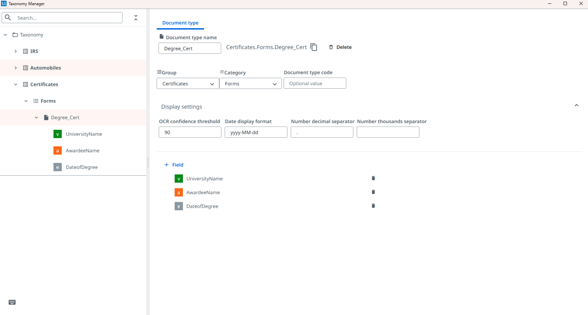
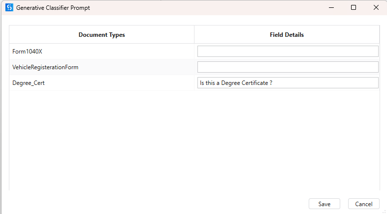
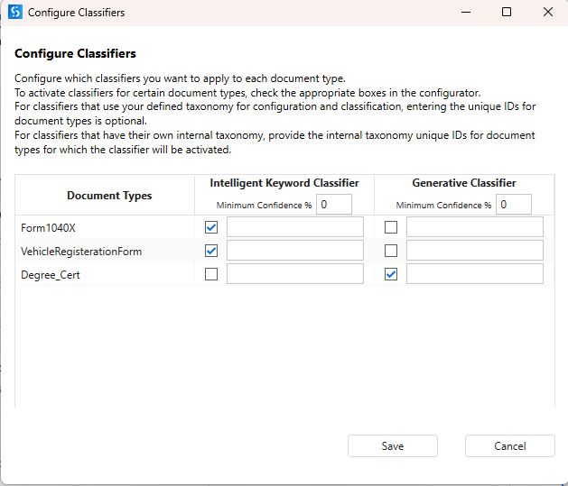
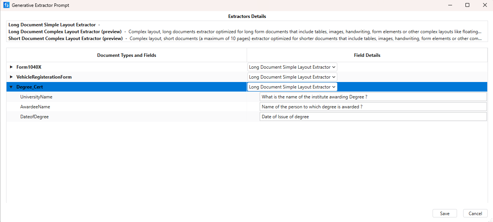
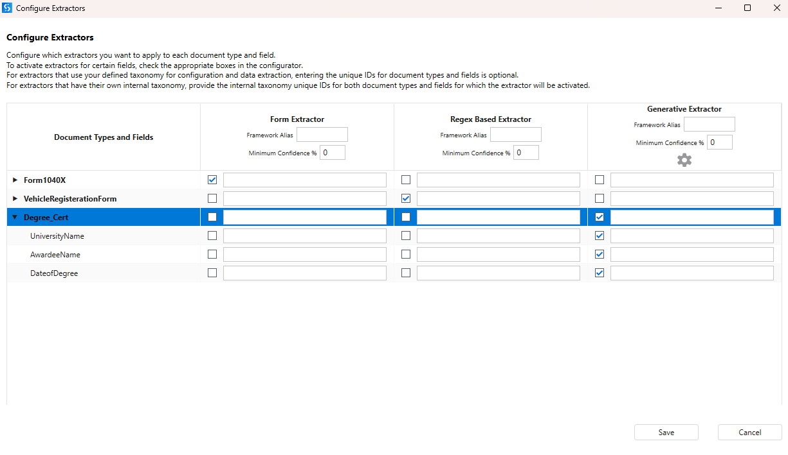

Part 1 : Practical Exercise
🎯 What You Will Do
- Reuse a Studio workflow to configure a Generative Classifier and Extractor
- Set up Taxonomy with document types and extraction fields
- Configure and run the end-to-end generative extraction workflow
- Validate extracted results using Validation Station
📎 Exercise Files
Download the files needed for this practical exercise:
Walkthrough Video
Watch the full practical walkthrough below. Follow along in your own UiPath environment to see the Generative Classifier and Extractor configured step by step.
UiPath Generative Extractor Workflow — Step-by-Step
1
Setup
Reuse the Earlier UiPath Studio Workflow
- Use the UiPath Studio Workflow from the "Structured Documents" module.
- Open the Main workflow.
2
Data
Configure Document Inputs
- Place sample documents in the
Data → Inputfolder.
3
Configuration
Configure the Taxonomy
- Open Taxonomy Manager.
- Create the required document types:
- Group:
Certificates - Category:
Forms - Document Type:
Degree_Cert
- Group:
- Create 3 extraction fields:
UniversityName(type: Text)AwardeeName(type: Text)DateofDegree(type: Date)

- Save the taxonomy.
4
Classifier
Add a Generative Classifier
- Under the Classify Document Scope in the workflow, add a Generative Classifier.
- Click Manage Field Details on the Generative Classifier.
- For the
Degree_Certdocument type, provide a natural-language description and Save.

- Example:
Degree_Cert→ "Is this a Degree Certificate?" - Click Configure Classifier and save the below configuration.

5
Extractor
Configure a Generative Extractor
- Under the Data Extraction Scope in the workflow, add a Generative Extractor.
- Click Manage Field Details on the Generative Extractor.

- Set prompts for each field:
UniversityName: What is the name of the institute awarding the Degree?AwardeeName: Name of the person to which degree is awarded?DateofDegree: Date of Issue of degree
- Save.
- Click Configure Extractor. Do the below configuration and Save.

6
Execution
Execute Extraction
- Run the workflow.
- Observe the output logs and verify:
- Taxonomy loaded successfully
- Classification completed
- Extraction completed
- Extracted fields are returned
7
Validation
Validate Extraction Results
- In the Present Validation Station after the extraction step.
- Review extracted values.
- Correct any incorrectly extracted fields.
- Submit validation results.